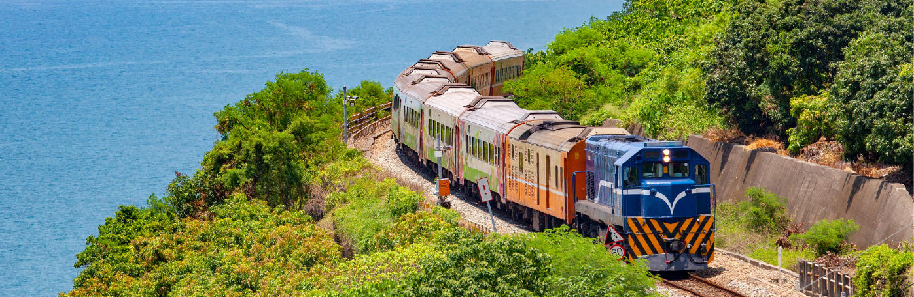

Save Life Wellness provides reliable and fully equipped train ambulance service in Vellore for patients requiring safe long-distance medical transfers. Whether a patient is being moved from Vellore to Delhi, Mumbai, Kolkata, or any major city across India, our medical team ensures uninterrupted critical care from pickup to hospital handover.
Vellore is home to some of India's most advanced healthcare institutions, including the globally renowned Christian Medical College (CMC) Vellore. Patients travel from across Tamil Nadu, Andhra Pradesh, Karnataka, and other states to receive treatment here. When further transfer or a return journey becomes necessary, Save Life Wellness is the trusted name families call.
Every transfer is accompanied by a qualified MBBS doctor, trained critical care nurse, and certified paramedic. Our team is equipped to manage any medical emergency that arises during transit and provides continuous monitoring throughout the journey.
Our train ambulance in Vellore is fitted with ICU-grade medical equipment, including ventilators, cardiac monitors, defibrillators, infusion pumps, portable suction machines, oxygen cylinders, and a complete set of emergency medicines. Every piece of equipment is checked and ready before departure.
We pick the patient up directly from their hospital bed or home in Vellore and transfer them safely to the receiving hospital at the destination. Our team manages every step — railway booking, medical setup, documentation, and final handover.
Medical emergencies do not follow a schedule. Our team is available around the clock to respond to urgent transfer requests and arrange a train ambulance from Vellore at any hour.
We offer competitive pricing with no hidden charges. The final cost is shared in writing before the transfer begins, so families can plan without uncertainty.
Our team handles all coordination with Indian Railways — booking reserved 1AC or 2AC compartments, converting the coach into a mobile ICU, and managing all necessary documentation and clearances.
Our train ambulance in Vellore carries the following ICU equipment as standard:
For critical patients requiring immediate transfer, our team mobilizes quickly and ensures the patient is stabilized before and during the journey. Round-the-clock response for emergencies.
For patients travelling to Vellore for scheduled treatment at CMC or other hospitals, or returning home after treatment, we plan every detail in advance to ensure a smooth, comfortable journey.
Complete door-to-door transfer from the patient's current hospital or residence to the destination facility. No handoffs, no gaps in care.
Newborns and young children require specialized handling. Our neonatal transfer setup includes transport incubators, neonatal ventilators, warmers, and paediatric monitoring equipment, managed by trained specialists.
Time-critical organ transport handled with strict temperature control and coordination with receiving medical teams to meet every required deadline.
.Save Life Wellness regularly coordinates patient transfers to and from the leading hospitals in Vellore, including:
Whether the patient is being transferred out for further treatment or returning home after care at any of these facilities, our team handles the complete process.
All train ambulance services from Vellore operate via Katpadi Junction (KPD), the main railway station serving Vellore. We provide patient transfers on the following routes, among others:
If your destination is not listed above, contact us — we cover all major cities and railway-accessible locations across India.
Call our 24/7 helpline and share the patient's diagnosis, current condition, oxygen or ventilator requirements, and destination. Our medical coordinator will assess the case immediately.
Based on the assessment, our team books the appropriate train, arranges the medical setup in a reserved 1AC or 2AC compartment, and handles all documentation with Indian Railways.
A dedicated team of doctor, nurse, and paramedic is assigned to the patient. All equipment is checked, loaded, and ready before departure from Vellore.
Our team arrives at the hospital or home in Vellore, stabilises the patient if required — securing IV lines, adjusting oxygen or ventilator support — and safely transfers them to the train.
Throughout the journey, vitals are monitored continuously. Medications are administered as needed. Any in-transit emergency is handled immediately by the on-board medical team
On reaching the destination, the patient is transferred to the receiving hospital. A full medical briefing is provided to the receiving team to ensure continuity of care.
Vellore's primary railway station is Katpadi Junction (KPD), which serves as the boarding point for all our train ambulance transfers. The station offers direct connectivity to Delhi, Mumbai, Kolkata, Hyderabad, and other major cities across India.
The cost depends on the destination, the level of medical equipment required, and the grade of the train berth booked (1AC or 2AC). We provide a clear, written quote before the transfer with no hidden charges. Contact us for a free estimate.
In most cases, we can arrange the transfer within a few hours of the initial call, subject to train availability. For planned transfers, we recommend contacting us 24–48 hours in advance.
Yes. Our standard package includes one attendant berth alongside the patient. Additional attendants may travel in the same train in a separate berth.
Yes. Our team coordinates directly with the discharging hospital in Vellore and the receiving hospital at the destination, managing all paperwork, documentation, and medical briefings at both ends.
Some private insurance policies cover medical transportation costs. We recommend checking with your insurer before the transfer. Our team can assist with documentation required for insurance claims.
Yes. We have a dedicated neonatal transport setup with transport incubators, neonatal ventilators, and NICU-trained staff for transferring newborns safely.
Our commitment to quality care and efficient service has earned us the trust of many patients and their families. Here’s what some of them have to say:
Mr. Ramesh Kumar, Chennai: "My father was discharged from CMC Vellore after cardiac surgery and needed to be taken home to Mumbai. Save Life Wellness handled everything — the train booking, the medical equipment, and the entire journey. The doctor and nurse were professional and reassuring throughout. The peace of mind they gave our family during that journey was invaluable.""
Anjali Verma, Delhi "When my son needed to travel from Vellore to Delhi for his follow-up treatment, the arrangements felt overwhelming at first. The Save Life Wellness team was responsive from the first call, set up everything at Katpadi Junction, and made the journey completely comfortable. Highly recommended for anyone needing train ambulance service in Vellore."
For more information or to know How to book our train ambulance service in Vellore, please contact:
Save Life Wellness Train Ambulance is available 24 hours a day, 7 days a week. Call us now for an immediate response.